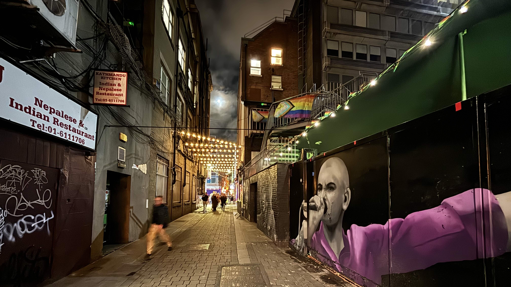
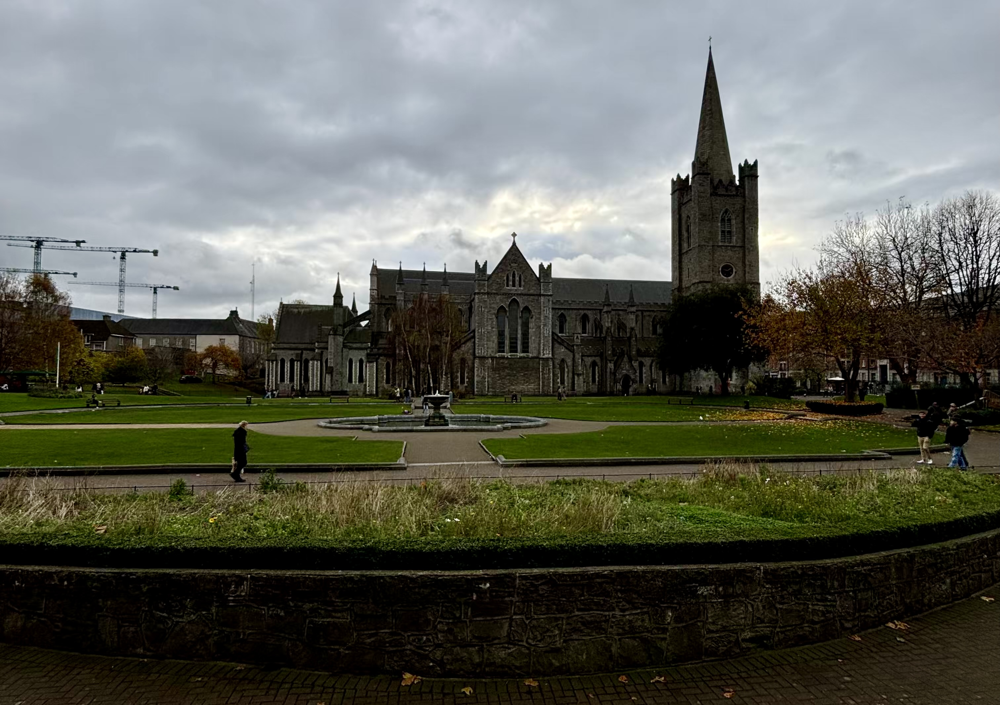
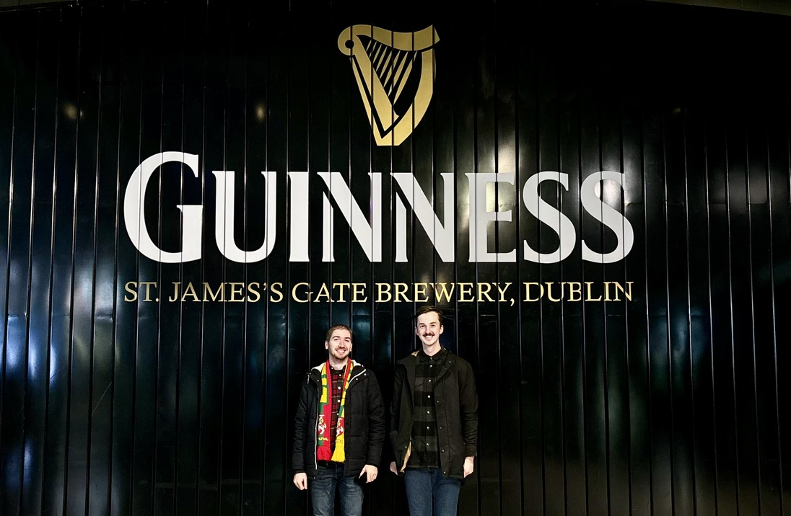
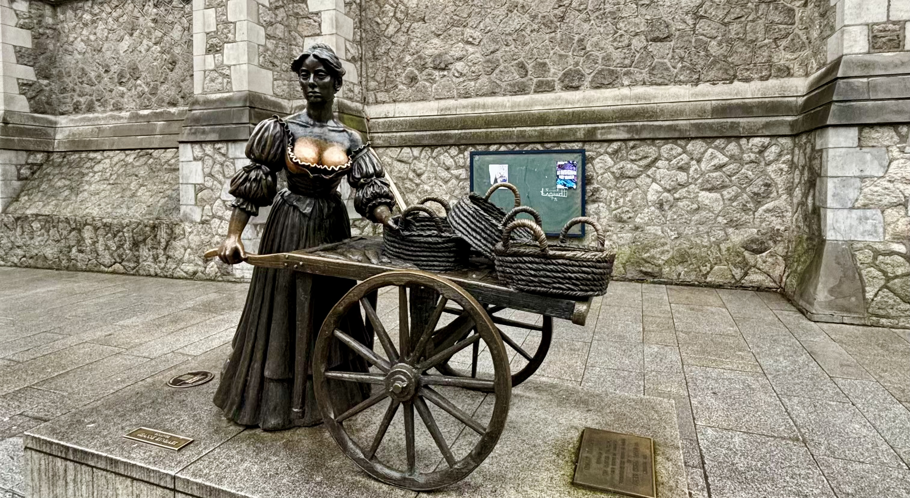

Dublin listopad 2024

Když jsem se na začátku roku vrátil z konference v Namibii, byl jsem z ní tak nadšený, že jsem prakticky hned jsem začal vymýšlet, kam bych mohl jet příště. Bylo mi ale jasné, že nemůžu být všude. Navíc jsem cítil, že se s cestami po světě musím trošku krotit, abych doma nevytvářel zbytečné dusno. S Klárou jsme se proto domluvili, že absolvuji max. dvě konference ročně, jednu evropskou a jednu mimoevropskou. A protože tu mimoevropskou jsem si tento rok už vyčerpal, začal jsem přihlašovat své talky na evropské konference zaměřené na programovací jazyk Python, neboli PyCony.
Po několika měsících mi napsali organizátoři francouzského PyConu, že přijímají jeden z mých talků. Velké nadšení ale brzy vytřídala velká frustrace. Zjistil jsem totiž, že konference bude probíhat v týdnu, kdy bychom se měli vracet z Islandu a navíc proběhne ve Štrasburku, kam nic nelétá. To by tím pádem znamenalo, že bych se vrátil z Islandu, doma se moc dlouho neohřál a už se musel vydat na další cestu. Konkrétně bych se musel dostat do Vídně, z ní letět do Frankfurtu a tam přestoupit na autobus, který by mě převezl přes hranice do Francie. Když jsem zjistil, kolik by tahle sranda stála a kolik času bych cestováním ztratil, nějaké přednášení na konferenci se mi přestalo jevit jako nejlepší nápad. Na druhou stranu mým hlavním argumentem, proč na konferenci vůbec jet, bylo, že bych rád pokračoval v budování své osobní značky a zároveň dělal něco prospěšného pro Pythoní komunitu, která mi v minulosti tolik dala. I proto jsem se po několika dnech rozhodl, že na konferenci pojedu. Když jsem ale jednoho pozdního večera otevřel počítat a už se chystal potvrdit svoji účast na francouzském PyConu, přišel mi email z Irska. Organizátoři tamního PyConu totiž přijali můj druhý talk! Konference měla proběhnout v listopadu, asi tři týdny po našem návratu z Islandu a navíc do Dublinu létá Ryanair přímým letem z Prahy za pár stovek. V tu chvíli nebylo co řešit. Francouzům jsem se omluvil a naopak potvrdil účast v Dublinu.
A protože Kláře se do Irska druhý rok po sobě nechtělo, zeptal jsem se Adama, zda by se ke mně na cestu nechtěl přidat. Ještě před tím, než jsem otázku položil, bylo mi jasné, že jakožto největší milovník Irska, kterého znám, neodmítne. A taky, že ne! 👍
DEN 0
Cesta do Irska začala na brněnském nádraží, kde jsme měli s Adamem sraz. Krátce po 18. hodině jsme nastoupili do vlaku společnosti RegioJet a absolvovali poklidnou cestu do Prahy. V hlavním městě jsme se ubytovali v mém oblíbeném hotelu na Karlíně, já si vyzkoušel svůj talk na konferenci a kolem 23. hodiny jsme šli spát.
DEN 1
Po snídani na hotelu jsme si objednali Uber a přesunuli se na letiště.
Když jsme dorazili do odletové haly a já uviděl frontu na pasovou kontrolu, trošku ve mě hrklo. Na pasovou kontrolu jsem totiž v Praze nikdy nečekal, ale tentokrát tam stál nekonečný zástup lidí, který se táhl jako had z jedné strany haly až na druhou. Navíc se mi zdálo, že se řada vůbec nehýbe. Nástupní brána do letadla se nám měla zavřít za hodinu a já si říkal, že to nemůžeme stihnout. Po chvíli jsem ale zjistil, že fronty jsou dvě. Jedna se hýbe, druhá ne. Stoupli jsme si proto do té správné a po chvilce jsme už měli zkontrované občanky a vesele pokračovali k naší bráně.
Let jsem strávil přípravou přednášky.
Po příletu jsme si dali oběd na dublinském letišti a poté absolvovali nekonečnou cestu žlutozeleným doubledeckerem do centra města. Vystoupili jsme u Dublinské jehly na O’Connell Street a poté se prošli pěší zónu plnou obchodů, až jsme dorazili na náš hotel.
Když jsme se ubytovali, otevřel jsem počítal, udělal poslední úpravy mojí prezentace a znovu si nahlas řekl celý talk. Když jsem s přípravou skončil, vyrazili jsme do města. Postupně jsme se zastavili u katedrály Nejsvětější Trojice a dublinského hradu a poté pokračovali na jídlo do čtvrti Temple Bar. V restauraci The Old Mill sice nevařili úplně nejlépe, ale více než jídlo mi vadil přístup obsluhy, která nás začala nenápadně vyhazovat ve chvíli, kdy viděla, že už jsme dojedli a nebudeme si objednávat nic dalšího.
Ze čtvrti plné restaurací, barů a pochybných existencí jsme zamířili na O’Connell Bridge. Po něm jsme přešli řeku Liffey na její severní břeh a po dřevené náplavce se vrátili zpět na hotel.
Večer jsme si ještě jednou projel prezentaci a šel si brzo lehnout, abych byl na druhý den fresh.
DEN 2
Ráno jsme vstali kolem 7. hodiny a zašli si na snídani. Adam mě potom doprovodil na místo konference a sám se vydal na cca 30 km dlouhý trek na poloostrov Howth.
V hotelu Radisson Blu, kde měla konference proběhnout, jsem našel stánek s registrací, ukázal pořadatelům vstupenku a šel jsem si najít svoji přednáškovou místnost č. 3. Na řadu jsem měl jít hned jako první v 9:15. Když jsem přišel do prázdné posluchárny, bylo krátce po 8:30. Sedl jsem si tedy do první řady a čekal na technika, který by mi pomohl se zprovozněním prezentace. U přednáškového pultíku byl totiž připraven pouze HDMI kabel, pro který nemám ve svém počítači vstup a já potřeboval, aby mi někdo dal redukci.
Když bylo 9 hodin a technik stále nikde, začal jsem být malinko nervózní. Šel jsem proto do vedlejší posluchárny č. 2 a zeptal se tamního technika, zda by mi mohl pomoct. Ten mi řekl, že moje posluchárna má vlastního technika, který určitě dorazí a pomůže mi. Vrátil jsem se tedy na svoje místo a čekal dál. Když bylo 9:10, do posluchárny začali chodit lidi. Po technikovi ani vidu ani slechu. Šel jsem proto zpět do “dvojky” a zkusil poprosit o pomoc znovu svého starého přítele, který mě před pár minutami odmítl. Ten se otráveně podíval na hodinky a pochopil, že už se mě asi nezbaví. Když jsme přišli do mojí posluchárny, byl tam už můj technik, který si mě rovnou převzal. Ten mi během několika okamžiků sehnal redukci a pomohl spustit prezentaci. V tu chvíli bylo 9:13.
Přestože prezentace byla ready, já byl ready, technik a kameraman v jedné osobně byli ready, tak jeden článek naší skládačky nám pořád chyběl, a to pořadatel, který by mě uvedl, jak se to na konferencích obvykle dělá. Postarší technik, se kterým jsme v tu chvíli byli už nejlepší kámoši, mi řekl, ať se toho nebojím a pokud se nikdo neukáže, ať se uvedu sám a začnu. Počkal jsem tedy do 9:16 a šel na věc.
Chvíli po tom, co jsem začal mluvit, se rozrazily dveře a do posluchárny přišla zmatená organizátorka s mikrofonem v ruce, která mě očividně měla uvést. To mě trošku rozhodilo. Jinak si ale myslím, že jsem svůj talk na téma “Zoology 101: python, pandas and duckdb” zvládl velice dobře. Posluchárna byla zaplněná skoro do posledního místa, paní organizátorka mi řekla, že takový zájem o téma společně s ostatními organizátory nečekali a po skončení přednášky za mnou přišlo i několik dalších lidí, kteří mi položili doplňující otázky a chtěli se o tématu dozvědět víc. Moc mě také potěšilo, když mi jedna studentka z Indie řekla, že poslední slide, na kterém jsem porovnával dvě pythoní knihovny pomocí emotikonů a příkladů ze světa zvířat, jí přišel “crazy”! 😁

Bla bla bla…
Po mém talku ze mě spadl stres a zbytek dopoledne jsem si tím pádem v klidu užil na následujících přednáškách ostatních Pythonistů:
- Build a RAG to Brag About (Natan Mish)
- Building Scalable AI multi-agent collaboration with Langchain, Langgraph, Crew.AI, and RAG (Mihai Criveti)
- Testable data pipelines - Lessons learned from writing modular SQL and Python models with DBT (Florian Stefan)
- Build a Powerful Autonomous Assistant with AI (Mark Smith)
- Pythonising Government AI (Michael Dowling)
Na obědě jsem si povídal s Johnem Gillem z Kanady o jeho knihovnách gotu a blume. Před odpoledním programem jsem ještě stihl projít stánky sponzorujících firem, jejichž zástupci primárně přišli na konferenci nahirovat nové lidi.
Odpoledne jsem si poslechl tyto talky:
- Leveraging GitHub Ecosystem for Python Projects: From Hello World to Docker Deployment (Tom Halpin, Eoin Halpin)
- How to not Screw Up a Python Based Product Startup (John Curry)
- Designing modular services with a practical example in AI/ML model deployment (Florenz Hollebrandse)
- Quantifying uncertainty with stochastic and machine learning models (Juan Castillo del Río)
- hodně zábavné lightning talks; ty nejlepší byly o pre-commit hooks, válečné lodi Vasa, nebo o budoucnosti s AI.
V průběhu dne jsem se seznámil s Davidem z Bratislavy. Po skončení konference jsme se zakecali a potom spolu ještě chvíli šli směrem na náš hotel. Když jsme se kousek od mého cíle loučili, vyměnili jsme si čísla a řekli si, že pokud se budeme cítit, zajdeme večer ještě na pivo. Po návratu na hotel jsem se nicméně potkal s Adamem, společně jsme zašli na jídlo do skvělé restaurace The Legal Eagle a já byl potom tak unavený, že jít ještě na pivo bylo to poslední, co se mi chtělo. Davidovi jsem se proto omluvil a šel na kutě. 💤
DEN 3
Adam už před cestou do Dublinu avizoval, že by rád navštívil dvě největší katedrály ve městě: katedrálu sv. Patrika a katedrálu Nejsvětější Trojice. A protože jsme jeli do Dublinu na prodloužený víkend, rozhodli jsme se, že spojíme příjemné s užitečným - v neděli společně zajdeme na mši do jednoho z kostelů, čímž si splníme svoji křesťanskou povinnost a zároveň se podíváme do jednoho z kostelů, aniž bychom museli platit vstupné.
A tak jsme v neděli ráno vstali, zašli si na snídani a následně se vydali na mši do katedrály sv. Patrika, největšího kostela v Irsku. Bohoslužba mi přišla hodně odlišná od toho, na co jsme zvyklí u nás. Kněz stál po většinu času zády k lidem, četl se jen jeden úryvek z bible a přijímání bylo pod obojí. Ještě před odjezdem do Irska jsem si ale zjištoval, zda se skutečně jedná o římskokatolický kostel a našel jsem, že ano. Přestože mi tedy průběh bohoslužby přišel zvláštní, byl jsem pořád v klidu. Až další den při cestě domů mě Adam upozornil, že jsem se spletl. Nejedná se totiž o římskokatolický kostel, jak jsem si původně myslel, ale o anglikánský! Tím pádem bylo vše jasné! Jediné, co mi nebylo jasné, je to, jak jsem se mohl splést! Možná jsem ve spěchu nestudoval, o které “katedrále sv. Patrika” si zjišťuji informace. Na světě totiž existuje ještě jedna hodně významná katedrála se stejným jménem, a to ta v New Yorku, která už římskokatolickým kostelem skutečně je!

Katedrála sv. Patrika, kam jsme šli na nedělní mši.
Po bohoslužbě a prohlídce katedrály jsem se vrátil na konferenci, kde jsem absolvoval dva workshopy na téma RAG a zašel na skromný oběd.
Dopoledne mi nebylo úplně dobře a oběd tomu moc nepřidal. Proto jsem se rozhodl, že vynechám odpolední program, který stejně zahrnoval už jen jeden workshop, a půjdu místo něj na hotel. A myslím, že to byla dobrá volba. Na pokoji jsem asi na hodinu usnul a vrátil se tím zpět do hry!
Kolem 15. hodiny jsme se s Adamem sbalili a šli do Guinness Storehouse, kde jsme absolvovali prohlídku věnovanou výrobě, skladování a konzumaci piva Guinness. K mému překvapení jsme celý sklad prošli velice rychle. Ve střešním baru jsme si potom dali jedno pivo a kolem 18. hodiny jsme byli už zpět v centru na večeři.

Adam, já a velké logo značky Guinness ve vstupní hale Guinness Storehouse.
Na jídlo jsme nejdříve chtěli zajít do steakhousu F.X. Buckley, který nám předchozí den doporučil číšník v The Legal Eagle. Protože v podniku ale bylo plno, zašli jsme na večeři do sesterské restaurace The Bull and Castle, kde jsme si dali velice průměrný burger a hranolky.
Po jídle jsme zašli na hotel, chvíli poseděli v hotelové restauraci a potom už se přesunuli na pokoj, kde jsme přepínali televizi mezi vědomostní soutěží The Chase (anglická verze pořadu Na lovu) a reality show I’m a Celebrity…Get Me Out of Here!
DEN 4
Poslední den v Dublinu jsme nikam nemuseli spěchat. Jediným bodem našeho programu byla totiž komentovaná prohlídka dublinského hradu, která začínala až v 10 hodin. V rámci hodinové prohlídky jsme se podívali do podzemích prostor pod hradem, gotické kaple a obytné části hradu.
Po velice nezáživné prohlídce, kterou bych už příště neabsolvoval, jsme se ještě naposledy prošli centrem města a poté zamířili na O’Connell Street. Tam jsme přes městký portál zamávali náhodným kolemjdoucím v Lublinu a Vilniusu a následně nastoupili do autobusu, který nás odvezl na dublinské letiště.

Při procházce centrem jsme se zastavili i u sochy Molly Malone.
Tam jsme prošli bezpečnostní kontrolou, dali si oběd v letištní restauraci a odletěli do Prahy. Když jsem vystoupil z letadla, zjistil jsem, že let s námi absolvoval i pan Veselovský, neboli “V” z DVTV.
Následovala klidná cesta Uberem na hlavní nádraží a potom cesta vlakem do Brna, kam jsme dorazili až krátce před 23. hodinou.
DOJMY Z DUBLINU
Not again… Už v minulém článku z Irska jsem psal, že irská města nejsou úplně můj šálek kávy. A můj názor se nezměnil ani teď. Kombinace pochmurného počasí, omšelých domů a mnoha lidí na jednom místě na mě působí hrozně depresivně. I to je důvod, proč necítím potřebu se do země v nejbližších letech znovu vracet. 🛑
Čeká mě další konference? Když se zpětně zamýšlím nad irským PyConem, mám pocit, že se jednalo o konferenci, ze které jsem byl zatím nejvíc ve stresu. Možná to bylo nekvalitní domácí přípravou, možná tím, že se jednalo o mojí první evropskou konferenci mimo domácí scénu, nebo možná tím, že to byla moje první konference, kde jsem měl mluvit v angličtině před lidmi, pro které je angličtina rodným jazykem. Jak vidíte, těch důvodů, proč by se můj talk měl pokazit, mě před odletem napadlo opravdu hodně. Byly i chvíle, kdy jsem si říkal, že tohle je naposledy, co někam jedu a že příště už se na něco takového můžu vykašlat. Nakonec ale všecho dopadlo dobře, lidé v sále reagovali pozitivně a já byl nakonec opravdu moc rád, že jsem překonal svůj strach a jel! A koneckonců přednášení na konferenci je mnohem víc, než jeden talk nějakého Jardy z Brna. Je to příležitost se seznámit s místními, naučit se něco nového a podívat se do míst, kde jsem ještě nebyl. I proto si říkám, že bych i příští rok měl splnit svoji kvótu a vyrazit na jednu evropskou a jednu mimoevropskou konferenci! A kam to bude? Protože jsem tento rok nebyl v Asii, přemýšlím, že bych příští rok zkusil přihlásit svůj talk na PyCon APAC, který se uskuteční v Manile. A co se týče té evropské konference, z mnoha stran jsem slyšel skvělé ohlasy na Vilnius a litevský PyCon. Tam je ale podle mě hodně těžké se dostat, takže uvidíme, kam mě osud zavane. 💨
FOTKY
Fotky z cesty do Dublinu najdete zde.